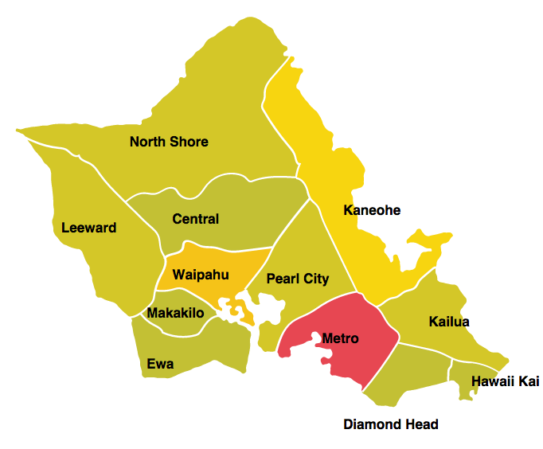

-

Honolulu Traffic Incident Heatmap
- D3.js
Visualization to show which region of the island various traffic incidents are occurring. This page colors a heatmap for the main regions of the island of O`ahu based on the number of reported incidents that have happened in a recent duration. It uses live data from the Traffic Incidents API provided by data.honolulu.gov.
-
TEDx Honolulu Mobile and Web Application
- Node.js
- Ionic
- Angular
Led a development team to implement and deploy an application to maintain and update a local conference schedule. This application uses a full-featured CMS (content management system) with mobile website/web application component.
-
Multi-user Todo List
- Node.js
- MongoDB
A To-Do app that supports multiple users. This app was written entirely in Express.js and uses a Mongolab DB to store the data. Authentication is a simple username/password.
-

-
Fastenate
- JQuery
This web application pulls data from subreddits and displays them in a grid format. It is media responsive and adjusts when viewed on a mobile device.
-